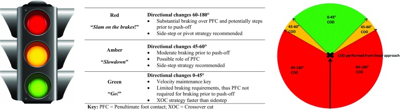
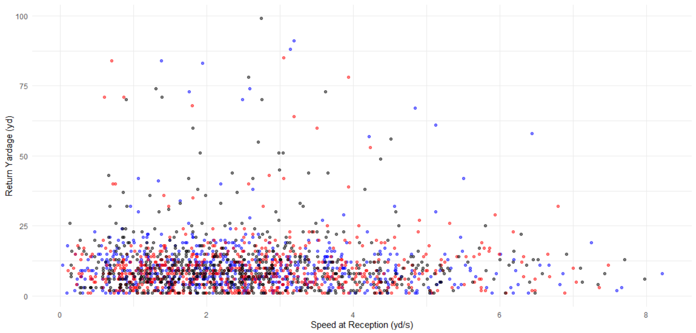
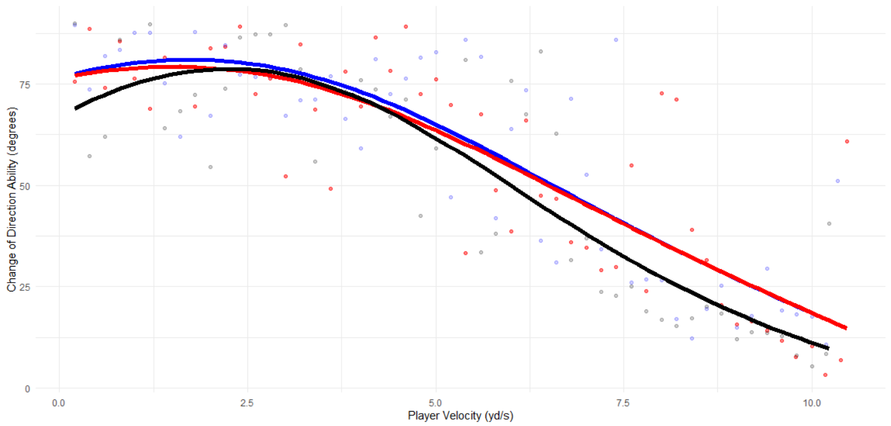
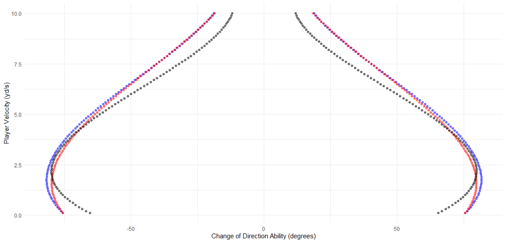
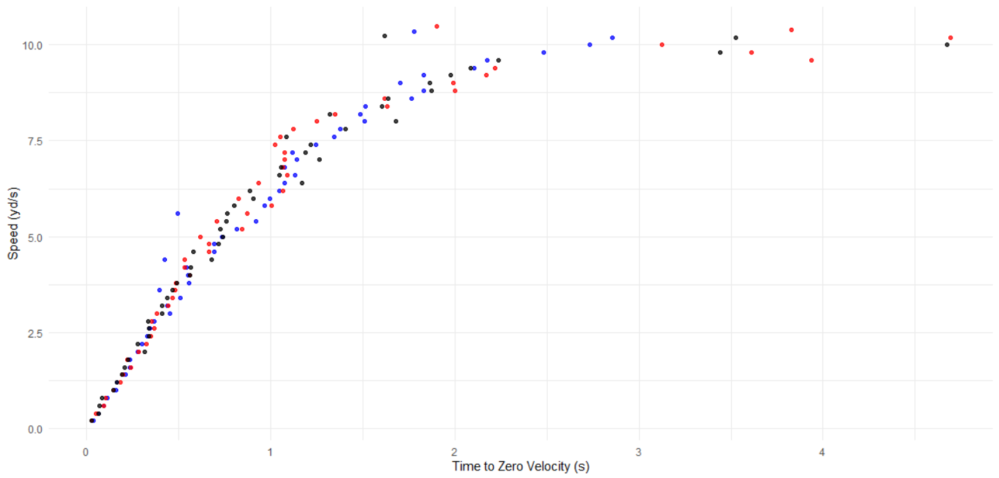
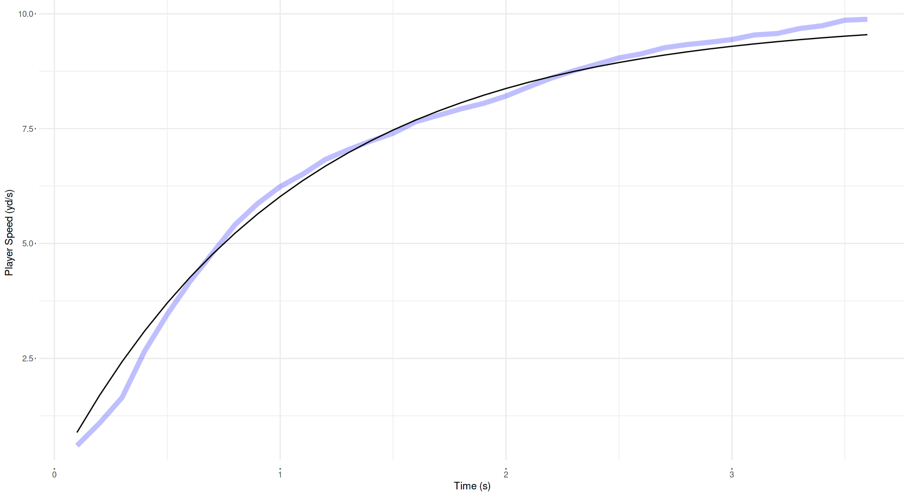
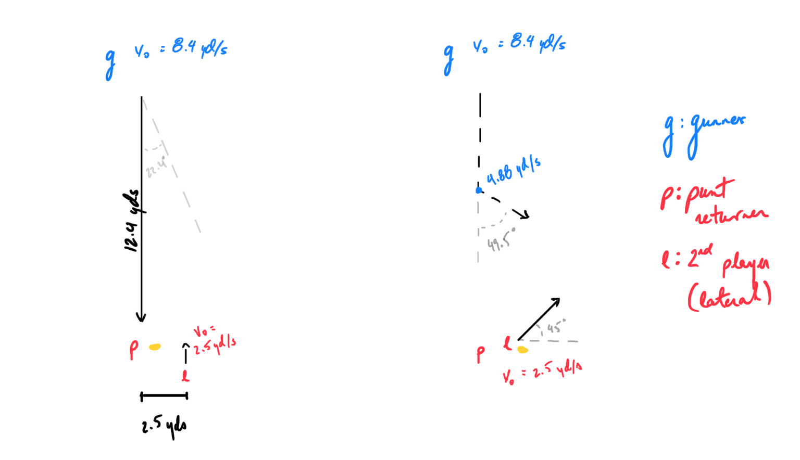
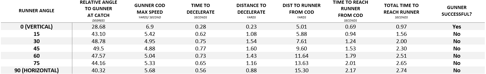

Big Data Bowl 2022 Submission
The Punt Returner Shouldn’t Return Punts - Someone Else Should
The angle-velocity trade-off is the interplay between a player’s current speed and their ability to change direction. As such, we can theoretically identify the greatest speed an athlete can maintain for any given directional change. For example, if the punt returner catches the ball while in motion, they can maximize their change-of-direction ability which can help them effectively juke oncoming gunners. In doing so, the punt returner maximizes their punt return yardage. Punt returners who catch the ball while in motion also have increased risks of mistiming the catch and fumbling the ball. Therefore, this submission suggests that the punt returner should lateral the ball to a secondary player who is in motion to maximize return yardage while mitigating the risks.
Background
While the ball is in the air, the punt returner is looking up and receives information from teammates about oncoming gunners, play formations, and potential running routes. Once caught, the punt returner looks downfield, processes the information, and decides on their best course-of-action. If the punt returner has zero velocity at the time of the catch, they have limited ability to juke oncoming gunners. Instead, if the punt returner is provided cues from a teammate positioned obliquely on whether a lateral is appropriate, and the direction and distance of the lateral, the secondary player can process information about oncoming defenders effectively. In doing so, the secondary player can better process running routes while also maximizing their ability to effectively juke oncoming gunners.
This submission expands on previous work that modelled a player’s mechanical sprint ability (https://www.kaggle.com/aaronzpearson/modeling-player-biomechanics). The model introduced in this submission is based on the following paper which quantifies a player’s change-of-direction ability: https://link.springer.com/article/10.1007%2Fs40279-018-0968-3. The authors state that a player’s intended change-of-direction impacts the maximal speed that they can maintain. For example, if a player is moving too quickly, they must decelerate to effectively manoeuvre on the field. The image below outlines the magnitude to which players must decelerate from maximal speeds to execute a given change-in-direction.
 Credit: Dos’Santos et al., 2018
Therefore, this submission hypothesizes that a secondary player can earn greater return yardage than the punt returner. The hypothesis is based on the model proposed by Don’Santos et al., 2018 wherein a player in motion has a greater ability to change-direction and evade oncoming gunners.
Methods
Data from the 2018-2019, 2019-2020, and 2020-2021 seasons were used to model a player’s change-of-direction ability. While cleaning the data, a player’s orientation was adjusted so that an orientation of 0 degrees resulted in the player facing the left goal-line. Orientation was then adjusted so that a player can rotate 0 to 180 degrees in either direction. Speed was binned every 0.2 yards/ second (i.e. (0, 0.2], (0.2, 0.4], etc.) and the greatest rate-of-change in orientation was extracted from the data set. Finally, a 3rd degree polynomial was fit to the data.
Modelling Change-of-Direction Ability
The change-of-direction ability between the gunner and secondary player were compared to assess the proposed model.
The secondary player was placed obliquely to the punt returner with 2.5 yards of lateral separation. They were assumed to run perpendicular to the punt returner and receive the ball 0.3 seconds after the punt is caught, parallel to the punt returner. The secondary player was also assumed to have a speed of 2.5 yards/ second (slow jog) when they received the lateral. Once the ball was secured, the secondary player was unimpeded in their maximal sprint efforts in any direction. The secondary player’s sprint abilities were previously modelled here [1]:
\[ v(t) = v_\max \cdot (1-e^\frac{-t}{\tau})\\ \]
where \(v(t)\) represents an athlete’s velocity at time \(t\), \(v_\max\) is an athlete’s maximum speed, and \(\tau\) is the acceleration constant calculated:
\[ \tau = \frac{v_\max} {a_\max} \]
where \(a_\max\) is an athlete’s maximum acceleration.
The secondary player’s sprint abilities were set as having a max speed of 10 yards/ second, a max acceleration of 15 yards/ second/ second, and a resulting acceleration constant of 0.67 seconds.
Finally, the ability for a gunner to change direction was assessed. The gunner was assumed to be maintaining a consistent speed until the secondary player received the lateral. Once the secondary player has secured the ball and changed direction, the gunner would decelerate to the maximal speed for the intended change-of-direction to intercept the secondary player. The rate of deceleration over a given distance was modelled based on that of acceleration [2].
\[ \Delta d (t)= v_\max \cdot ((t + \tau) \cdot e^\frac{-t}{\tau}) - (v_\max \cdot \tau) \]
where \(\Delta d(t)\) represents the distance travelled from point \(d_0\) to \(d_i\) at time \(t\).
To model deceleration, the inverse of formula 1 was adjusted so that it took on a player’s current speed and goal speed (goal speed < current speed) [3]:
\[ v^{-1}(t) = ln[1- (\frac{v_i}{0.1} - 1)]\cdot\tau - ln[1 - (\frac{v_n}{0.1} - 1)] \]
where \(v_i\) is the player’s current speed and \(v_n\) is the player’s goal speed. [2] was also adjusted so that the player’s max speed was replaced with the player’s current speed, and the time split, \(t\) was that from [3].
\[ \Delta d (t)= v_i \cdot (t + \tau \cdot e^\frac{-t}{\tau}) - (v_i \cdot \tau) \]
Results
Return Yardage
Return yardage was plotted against the punt returner’s initial velocity. The plot shows that the greatest return distances during the 2018-2019 (black), 2019-2020 (red), and 2020-2021 (blue) seasons occurred when the punt returner was moving between 1 – 4 yards/ second. Please note that fair catches were removed from this plot.

Change of Direction
Change of direction was capped at 90 degrees because it is unrealistic that a change-in-direction greater than such is feasible at 10Hz. Rather, it was assessed that such changes in direction were due to player impacts and improper data collection. The greatest rate-of-change was then modelled. The resulting model from the 2018-2019 (black) season followed the polynomial:
\[ cod(v) = -15.85v + 4.41v^2 - 0.23v^3 + 63.89 \]
where \(cod(v)\) is the player’s change-of-direction ability at a given speed, and \(v\) is a player’s speed in yards/ second. Models were similarly fit for the 2019-2020 and 2020-2021 seasons.

The model assumed that the player’s change-of-direction ability did not differ between left and right. Therefore, the player’s abilities resulted as the following (note that the axes are flipped for aesthetic purposes):

Rate of Deceleration
The player’s rate of deceleration was assessed by extracting the greatest speed an athlete maintained during their deceleration. The plot below shows a similar trend to those above: a player’s deceleration ability does not change by a large magnitude between seasons.

Sprint Abilities
Finally, the gunner’s sprint abilities were modelled and fit, as demonstrated in the plot below:

Sample Plays
Using the 2018-2019 data, a gunner’s median distance from the punt returner at the time of reception was 12.4 yards. Furthermore, at the time of reception, gunners had a median speed of 8.4 yards/ seconds, acceleration of 5.6 yards/ second/ second, and an acceleration constant that was modelled of 1.4 seconds. Therefore, the gunner’s maximal sprint abilities would allow them to reach the punt returner in 1.51 seconds. These values were utilized in the example below.

In this example, the gunner has an initial maximum ability to change direction of 24.4 degrees. Within the secondary player’s allotted 1.21 seconds (1.51 seconds for the gunner to reach the punt returner minus 0.3 seconds for the lateral), they travelled linearly 7.83 yards. To intercept the secondary player, the gunner must change direction relative to the secondary player at 49.5 degrees. Therefore, the gunner must decelerate to 4.88 yards/ second which will take 0.77 seconds and 1.60 yards. This provides the gunner with 0.73 seconds to re-accelerate to reach the secondary player. In the example above, the time it takes to change direction and span the required distance takes a total of 2.30 seconds. The secondary player has ample time to continue their given path and evade the gunner.
Further Results

Conclusions and Future Work
The model built for this submission clearly indicates that the punt returner should lateral the ball to a secondary player to improve return yardage. Further research can model the impact of having the punt returner act as a blocker after they lateral the ball which can provide the secondary player greater ability to return the ball. Finally, there is reason to believe that a secondary player provides an option for the receiving team in that the gunner must choose a player to attack. As such, the punt returner can decide which player the gunner has chosen and lateral the ball when appropriate.
Limitations
This submission is based in theory. Unfortunately, there are no observed plays where the punt returner immediately laterals the ball. Therefore, it is impractical to validate these findings.